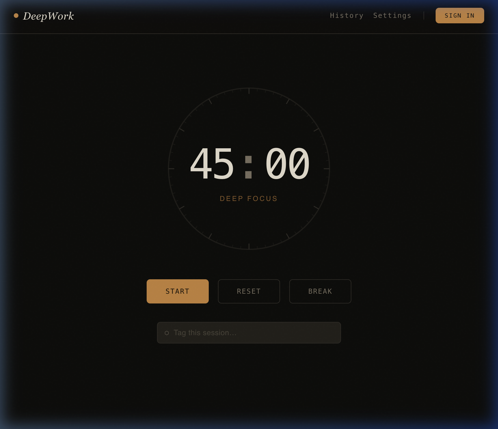

By Qi (Dako) Wei & Lipeipei Sun | March 2026

Most developers use AI to write code faster. We used it differently — as a structured engineering pipeline where every stage had a defined input, a defined output, and a defined AI tool responsible for bridging the two.
DeepWork is a full-stack Pomodoro focus timer built for users who reject rigid session transitions. When a focus session ends, the app sends a gentle notification — it never forces a break. Sessions are logged automatically, tagged by project, and surfaced in an analytics dashboard so users can actually understand their own productivity patterns. The stack is Next.js 16 with App Router, MongoDB Atlas, JWT authentication via HTTP-only cookies, and Tailwind CSS, deployed on Vercel. We built it in two one-week sprints, as a two-person team, with 80%+ test coverage enforced from day one.
The core claim: Claude Web artifacts let us validate the full UI before writing a single backend route — and kept evolving as a living design document throughout both sprints, not a one-time throwaway deliverable.
Every feature in DeepWork traces back to a behavioral interview. We conducted three Mom Test interviews in February 2026. We fed the raw interview notes into Claude and asked it to identify recurring pain points, extract validated personas, and translate them into structured user stories with acceptance criteria. The output directly shaped our PRD. For example, all three interviewees described dismissing timer alerts mid-thought — not occasionally, but consistently. Claude helped us articulate this as an engineering requirement rather than a UX preference: "As a remote worker, I want to be notified when a session ends without being forced into a break, so I can finish my current thought before switching."
With user stories in hand, we used Claude's artifact feature to generate a working React prototype — a fully rendered, interactive UI — before touching the backend. Decisions that would have been expensive to reverse later — like how the accumulated focus bar relates to the per-session timer, or where the tag input lives in the session flow — were settled visually in minutes.
Midway through Sprint 1, as we built the actual features, we hit usability issues that the prototype had not revealed. Rather than treating the prototype as a finished artifact, we went back to Claude Web, described what we had learned, and updated it. We treated it as a checkpoint. Every time real development surfaced a design assumption worth revisiting, the prototype was updated to reflect the new understanding.
The core claim: agentic AI produces high-quality code only when the process constrains it. Our two-chat TDD workflow and CI/CD pipeline made quality a mechanical guarantee, not a judgment call.
We enforced a strict two-phase TDD cycle that treated AI the same way you treat any developer on a team:
Phase 1 — Write Tests (Red State). A Claude Code session read the user story and wrote failing integration tests. No implementation code. At the end of Phase 1, every new test had to fail.
Phase 2 — Implement to Pass (Green State). A separate Claude Code session then implemented the minimum code required to make those tests pass. Critically, test files were locked by a pre-commit hook — guard-test-files.sh — during this phase. If a test failed, the instruction was unambiguous: fix the implementation, never the test.
First: constrained roles consistently outperform open-ended prompts. Every tool had a job. The quality of the output was directly proportional to the specificity of the constraint.
Second: documentation is the real force multiplier. We maintained a CLAUDE.md file — a project-level instruction document that told Claude Code the architecture patterns, naming conventions, and testing philosophy.
Third: the pipeline itself is the repeatable asset. AI-assisted engineering is not faster because AI writes more code. It is faster because it compresses the feedback loops between design, implementation, and validation.